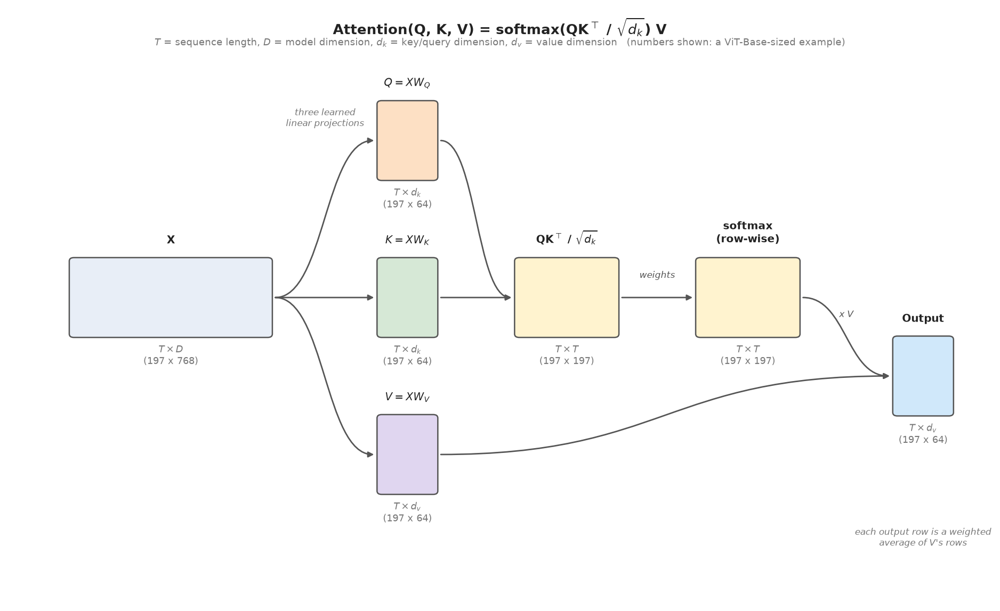
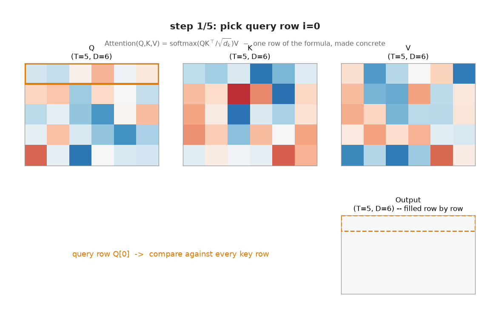

Lesson 45: The Attention Mechanism¶
Every model in Part 3 processed spatial structure through convolution: a fixed, local neighborhood pattern, applied the same way everywhere (Lesson 10). Attention is a different way to mix information across a sequence or an image: instead of a fixed neighborhood, every position decides, dynamically, which other positions are relevant to it right now, and mixes them in proportion to that relevance. This lesson builds attention from scratch, validates it against PyTorch's own implementation, and shows concretely what it's doing: soft, content-based retrieval.
import numpy as np
import torch
import torch.nn as nn
import torch.nn.functional as F
import matplotlib.pyplot as plt
Intuition: a weighted average of prototypes¶
Let's consider the idea of attention in its simplest form, with just one query and a handful of candidates.
Suppose you have a set of $T$ folders in a filing cabinet drawer. The contents of the folders are the value vectors $v_1, \dots, v_T$ — think of them as prototypes, or memory contents: whatever gets returned once the folder is picked. Alongside each value sits a key $k_j$, a short description used only for matching, not part of the content itself — like a label on the folder, not what's inside it. And you have one query vector $q$, which is a description of what you're currently looking for, in the same form as the keys so it can be compared against them.
Think of the query $q$ as the label you're looking for, although it might be a partial match. For example, $q$ might be "credit card" so that it matches multiple folders holding statements for all your individual credit cards. But $q$ won't match the folders holding your bank account statements.
Compare $q$ against every key using a dot product, $q^\top k_j$ — a similarity score, large when $q$ and $k_j$ point in similar directions, small or negative otherwise. Turn those $T$ scores into non-negative weights that sum to 1 with softmax (Lesson 36). The output is then a weighted average of the prototypes, weighted by how well each one's key matched the query:
$$\text{output} = \sum_{j=1}^{T} w_j\, v_j, \qquad (w_1, \dots, w_T) = \text{softmax}(q^\top k_1, \dots, q^\top k_T),$$
If one key matches far better than the rest, softmax pushes its weight toward 1 and the output collapses to essentially that one value — ordinary, "hard" lookup, as a limiting case. If several keys match comparably well, the output blends them smoothly instead of forcing a single winner.
A real sequence doesn't have just one query, though — a sequence of $T$ positions (words, image patches, etc.) each produces its own query, its own key, and its own value. Make this precise by stacking the $T$ query vectors into a matrix $Q$, the $T$ key vectors into $K$, and the $T$ value vectors into $V$:
$$ Q = \begin{bmatrix} -\; q_1^\top \;- \\ -\; q_2^\top \;- \\ \vdots \\ -\; q_T^\top \;- \end{bmatrix}, \qquad K = \begin{bmatrix} -\; k_1^\top \;- \\ -\; k_2^\top \;- \\ \vdots \\ -\; k_T^\top \;- \end{bmatrix}, \qquad V = \begin{bmatrix} -\; v_1^\top \;- \\ -\; v_2^\top \;- \\ \vdots \\ -\; v_T^\top \;- \end{bmatrix} $$
Think of $V$ as a table of prototypes and $Q$ and $K$ together as a soft, differentiable way of deciding how much weight each prototype should get — this is exactly what "soft, content-based retrieval" means, made precise below.
Running the single-query computation above once per position, for all $T$ positions simultaneously, is exactly matrix multiplication. By the definition of matrix multiplication, entry $(i, j)$ of $QK^\top$ is row $i$ of $Q$ dotted with row $j$ of $K$ — exactly $q_i^\top k_j$, the same similarity score from the single-query version above, now computed for every query $i$ against every key $j$ at once in a single matrix product. Applying softmax to each row of that $T \times T$ matrix and multiplying by $V$ then reproduces the weighted-average-of-prototypes computation above, independently, for every row:
$$\text{output} = \text{softmax}(QK^\top)\, V$$
This is the whole idea, in matrix form.
Queries, keys, and values¶
The one piece still missing from the matrix form above is normalization. Divide the raw scores by $\sqrt{d_k}$ (the square root of the key dimension) before the softmax — without it, dot products grow larger as dimensionality increases, which pushes softmax into a regime with vanishing gradients (Lesson 37), the same instinct as Lesson 33's weight-init scaling, now applied to attention scores instead of layer activations. With that one change, this is the formula used in practice:
$$\text{Attention}(Q, K, V) = \text{softmax}\left(\frac{QK^\top}{\sqrt{d_k}}\right)V$$
Where do $Q$, $K$, and $V$ actually come from? Every position starts from the same input vector that the rest of the network produced for it — stack those $T$ input vectors into a matrix $X$, one row per position, same as $Q$, $K$, $V$ themselves. $Q$, $K$, and $V$ are then three separate linear projections of that same $X$, each through its own learned weight matrix:
$$Q = XW_Q, \qquad K = XW_K, \qquad V = XW_V$$
$W_Q$, $W_K$, and $W_V$ are learned during training (Lesson 31) — gradient descent decides what each projection should extract from $X$ — and the same three matrices are reused for every position and every sequence length, which is exactly what lets one attention layer run on sequences of any length. Intuitively, $W_Q$ turns a position's vector into "what am I looking for," $W_K$ turns it into "what do I have to offer, for others to search against," and $W_V$ turns it into "what do I actually contribute if picked" — three different readings of the same underlying vector.
The shapes are easy to lose track of in all this. $X$ is $T \times D$ — $T$ rows, one per sequence position, $D$ columns, the model's working dimension. $W_Q$ and $W_K$ are $D \times d_k$, and $W_V$ is $D \times d_v$, so $Q$ and $K$ come out $T \times d_k$ and $V$ comes out $T \times d_v$. $QK^\top$ is therefore $T \times T$: a full matrix of pairwise similarity scores, one row per query position, one column per key position. Softmax normalizes each row independently, so every row still sums to 1, and multiplying that $T \times T$ weight matrix by $V$'s $T \times d_v$ rows gives a $T \times d_v$ output — the same number of rows as the input, each one a weighted blend of $V$'s rows.
To put real numbers on these letters: a Vision Transformer (Lesson 47) splits a 224x224 image into 16x16 patches, giving $14 \times 14 = 196$ patches, or $T \approx 197$ once a classification token is added, with a model dimension $D$ around 768 for a "base"-sized model. Split across, say, 12 attention heads (Lesson 46), each head's $d_k$ works out to $768 / 12 = 64$ — and $d_v$, the value dimension, is usually just set equal to $d_k$ in practice (so also 64 here), even though the formula doesn't actually require that: only $Q$ and $K$ must share a dimension, since their dot product has to be defined, while $V$'s width is free to be whatever is convenient (it simply sets the output's width too). So in round numbers: $T$ is typically in the hundreds (more for longer text sequences, higher-resolution images, or video), $D$ is in the hundreds to low thousands, and each head's $d_k$/$d_v$ is usually a modest few dozen to around 128 — small enough that one image's $QK^\top$, at roughly $197 \times 197 \approx 39{,}000$ entries, is cheap. But that count grows with the square of $T$, which is exactly why longer sequences get expensive fast.
The diagram below fills in exactly these numbers, with each box's size drawn roughly proportional to its actual shape:

def attention(Q, K, V, mask=None):
d_k = Q.shape[-1]
scores = Q @ K.transpose(-2, -1) / np.sqrt(d_k)
if mask is not None:
scores = scores.masked_fill(mask == 0, float('-inf'))
weights = F.softmax(scores, dim=-1)
return weights @ V, weights
torch.manual_seed(0)
B, T, D = 2, 5, 8 # batch, sequence length, dimension
Q = torch.randn(B, T, D)
K = torch.randn(B, T, D)
V = torch.randn(B, T, D)
out, weights = attention(Q, K, V)
out_torch = F.scaled_dot_product_attention(Q, K, V)
print(f'output shape: {tuple(out.shape)}')
print(f'each attention-weight row sums to 1: {torch.allclose(weights.sum(-1), torch.ones(B, T))}')
print(f'max abs diff vs F.scaled_dot_product_attention: {(out - out_torch).abs().max().item():.2e}')
The animation below walks through the formula one query row at a time for a small example ($T=5$, $D=6$): pick a query row, score it against every key row, turn those scores into softmax weights, and use those weights to blend $V$'s rows into one output row — repeated for every position until the full output matrix is filled in.

Attention as soft, content-based retrieval¶
Abstract formula aside, here's concretely what attention does: given a query, it looks up the most similar keys in the sequence and returns a blend of their values, weighted by similarity. Build a toy sequence of 5 distinct "tokens" (one-hot vectors, scaled up to make similarity differences sharper) and query for the token that matches position 2 exactly.
vocab = torch.eye(6) * 5.0 # 6 distinct tokens, scaled to sharpen dot-product contrast
seq = vocab[[0, 1, 2, 3, 4]].unsqueeze(0) # a 5-token sequence: tokens 0,1,2,3,4
query = vocab[2].unsqueeze(0).unsqueeze(0) # a query vector identical to token 2
out_retrieve, w_retrieve = attention(query, seq, seq)
retrieved_token = out_retrieve[0, 0].argmax().item()
print(f'attention weights over the 5 sequence positions: {w_retrieve[0, 0].round(decimals=3).tolist()}')
print(f'retrieved token id: {retrieved_token} (queried for token 2)')
plt.figure(figsize=(5, 1.5))
plt.imshow(w_retrieve[0].numpy(), cmap='viridis', aspect='auto')
plt.xlabel('sequence position (key)'); plt.yticks([])
plt.title('Attention weights: query = token 2')
plt.colorbar(fraction=0.02)
plt.show()
![No description has been provided for this image]()
Attention correctly pulls out token 2, weighting position 2 far above the others (visualized as the bright cell in the heatmap). This is the mechanism, stripped down: no convolution kernel, no fixed neighborhood — just "find what's similar, weighted-average it in."
Causal masking¶
Some tasks (predicting the next token in a sequence) require that a position can only attend to positions at or before itself — attending to the future would let the model "cheat" by looking at the answer. This is enforced with a mask: scores for disallowed (future) positions are set to $-\infty$ before the softmax, so they get exactly zero weight.
causal_mask = torch.tril(torch.ones(T, T)) # 1 where position i may attend to position j <= i
out_causal, w_causal = attention(Q, K, V, mask=causal_mask)
out_torch_causal = F.scaled_dot_product_attention(Q, K, V, is_causal=True)
future_weight = w_causal[:, 0, 1:].abs().sum().item() # position 0 attending to positions 1..T-1
print(f'total attention weight from position 0 onto FUTURE positions: {future_weight:.6f} (should be exactly 0)')
print(f'max abs diff vs F.scaled_dot_product_attention(..., is_causal=True): {(out_causal - out_torch_causal).abs().max().item():.2e}')
# Masked-out (future) positions are literally zero weight, not missing data --
# but displaying them as 0 under viridis paints them dark, which reads as "a
# small but real weight" rather than "disallowed." Replace them with NaN and
# let imshow render NaN as white, so "not attended to at all" looks visually
# distinct from "attended to, but weakly" -- matching the animation below.
w_display = w_causal[0].numpy().copy()
w_display[causal_mask.numpy() == 0] = np.nan
w_display = np.ma.masked_invalid(w_display)
cmap = plt.get_cmap('viridis').copy()
cmap.set_bad('white')
plt.figure(figsize=(4, 3.5))
# vmin=0 anchors the color scale at true zero (matching the animation below),
# rather than letting imshow autoscale to this array's own smallest weight.
plt.imshow(w_display, cmap=cmap, vmin=0, vmax=w_display.max())
plt.xlabel('key position'); plt.ylabel('query position')
plt.title('Causal attention mask\n(every row only attends to itself and the past)')
plt.colorbar(fraction=0.046)
plt.show()
![No description has been provided for this image]()
The static heatmap above shows the finished mask; the animation below shows why it comes out triangular, by tying it to generation order directly — a short sequence is produced one token at a time, and at each step, only that new token's attention row is revealed, always over positions 0 through the current one and never beyond, because later positions simply don't exist yet.
![Animated autoregressive generation of a short token sequence, one position at a time, paired with the causal attention weight matrix being revealed row by row: at each step, the just-generated token is highlighted, already-generated tokens are shown in green, not-yet-generated tokens are greyed out with a question mark, and the attention matrix shows only rows for positions already generated, each row's nonzero weights confined to key positions at or before that row, with not-yet-revealed rows masked white](../animations/causal_attention_generation_demo.gif)
Causal masking is exactly why GPT-style models are called "autoregressive": at generation time, each new token's query can only see keys and values from tokens already generated, never ones that don't exist yet. Bidirectional models (like BERT, or every vision transformer in the next lesson) skip this mask entirely — an image doesn't have a "future," so every patch is free to attend to every other patch.
Notice, in the animation above, that an already-generated row's keys and values never change as later rows are added — only the newest row needs a key and value computed at all. That fact is what makes a KV cache possible at inference time (Lesson 53): instead of recomputing $K$ and $V$ for the whole sequence at every generation step, a real system computes each position's key and value exactly once, caches them, and only appends one new key/value pair per step.
Exercises¶
- In the retrieval demo, change
querytovocab[2] + vocab[4](a blend of two tokens) instead of a pure match. Does attention now split its weight between positions 2 and 4? Does the split look roughly even, and can you explain why from the dot-product formula? - Remove the
/ np.sqrt(d_k)scaling fromattentionand rerun the retrieval demo withDincreased from 8 to 128. Do the attention weights become more or less "peaked" (closer to one-hot) as dimension grows without scaling — and does adding the scaling back restore the original behavior? - Build a mask that allows each position to attend only to itself and its immediate neighbors (a "local attention" window, width 3) instead of the full causal triangle. How does the resulting weight pattern compare to a Lesson 10 convolution kernel applied along the sequence?